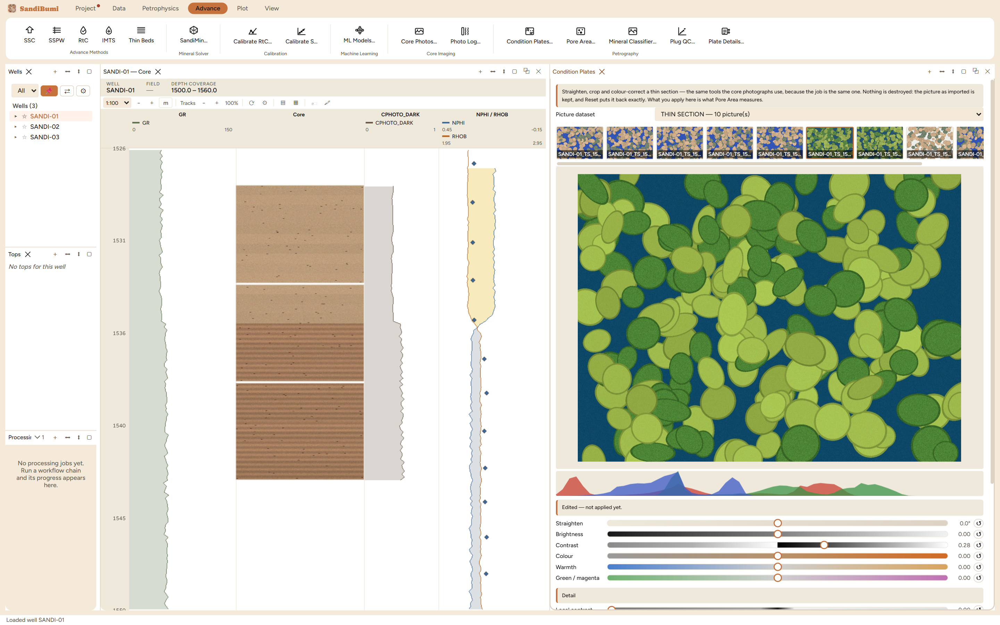

Condition Plates is the conditioning workspace pointed at thin
sections. A plate arrives with exactly the problems a core photograph
does, lifted out of a workbook at whatever angle it was scanned and
under whatever lamp the microscope had, so it gets the same tools:
straighten, crop, colour, detail, all non-destructive, all baked only on
Apply. Reach for it to fix framing before measurement; what you apply
here is literally what Pore Area measures.
The pane

The example delivery's filmstrip with the green-cast plate
open: the lamp has pushed every grain toward green, the RGB
histograms sit a channel apart, and the recommender stages contrast
+0.28 while declining to invent a white balance from rock.
One workspace, two entry points. This is the Core
Photos… workspace opened on a thin-section delivery; the
depth-strip and trace tools stay core-only, because a section is cut
from one plug and covers no interval.
The same three-state honesty: as imported / edited-and-not-
applied / applied-in-the-project, with Reset returning the import
exactly.
Step by step
Open Advance ▸ Petrography ▸ Condition
Plates… and pick the plate from the filmstrip, which
shows plates as pictures rather than filenames.
Fix framing where a scan needs it: Straighten for a crooked scan,
Crop for a label or holder edge, Square up for a plate photographed
at an angle.
Apply, and only what is applied reaches the measurements.
Reading the result
The interesting decision on the example is what not to do. Two
plates of this delivery were photographed under a green-cast lamp, and
the recommender's advice on them is the same as on the core boxes:
almost nothing in a thin section is both bright and uncoloured, so it
proposes contrast and declines the white balance rather than scrubbing
the rock's own colour out. That is the right refusal here, because lamp
casts across a plate delivery are Pore Area's job: its reference-plate
normalization corrects every plate onto one the band was tuned on,
anchored on the rock's matrix colour, and reports how far each plate had
to move. Conditioning by hand and the reference correction compose, so
a white balance done here leaves the correction less to do. For colour,
though, the measured route is usually the better one, and so
the example plates were left as delivered.
QC and pitfalls
Never straighten a plate by stretching it. The workspace
only rotates and crops; a thin section's delivered shape is the
truth, and a squashed plate misstates grain shape, which is the one
thing the plate is there to show.
Condition before declaring a scale. A crop changes which
part of the picture the field-of-view width describes; measure the
scale bar (Plate Details) on the plate as it will be measured.
Detail sliders change what the measurements see. Denoise
removes exactly the speckle the pore rule's pixel floor exists to
ignore, and sharpening invents edges; leave them for display
copies.